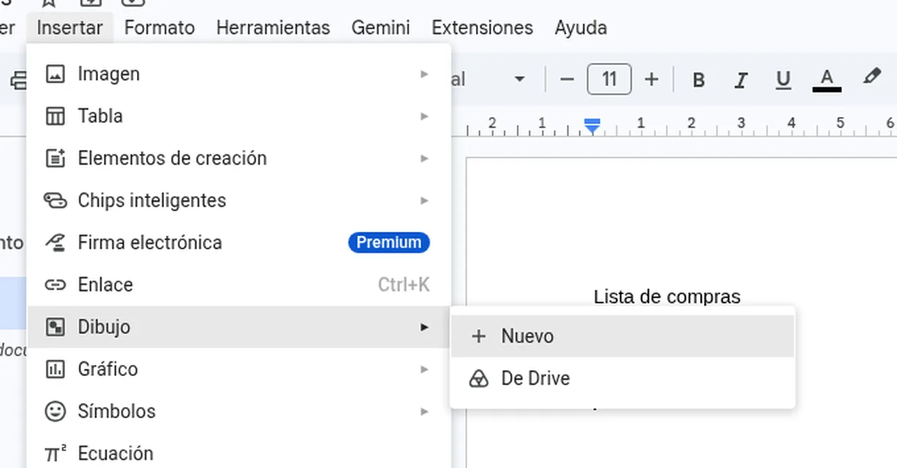
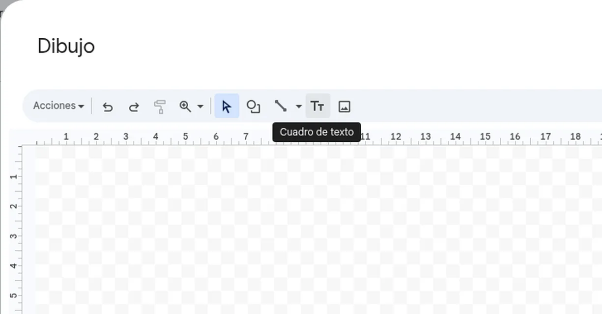
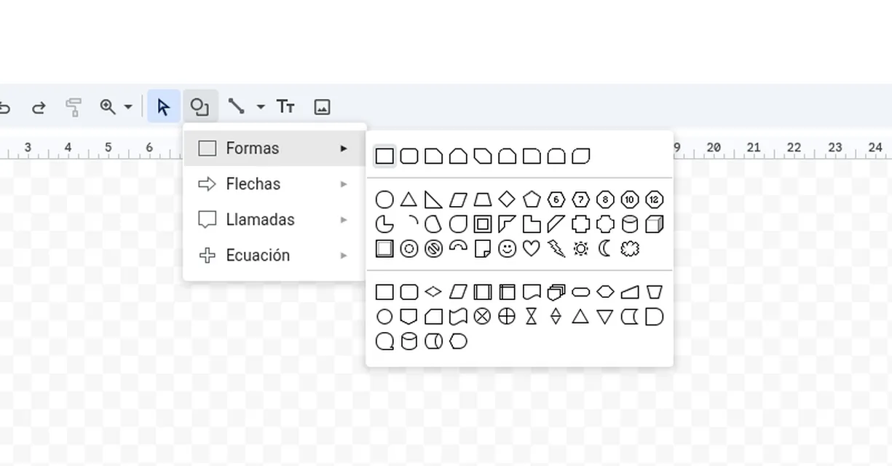
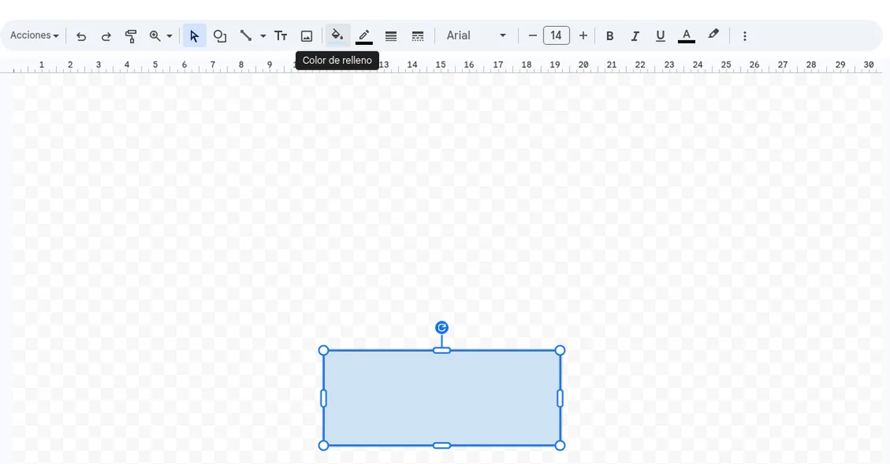
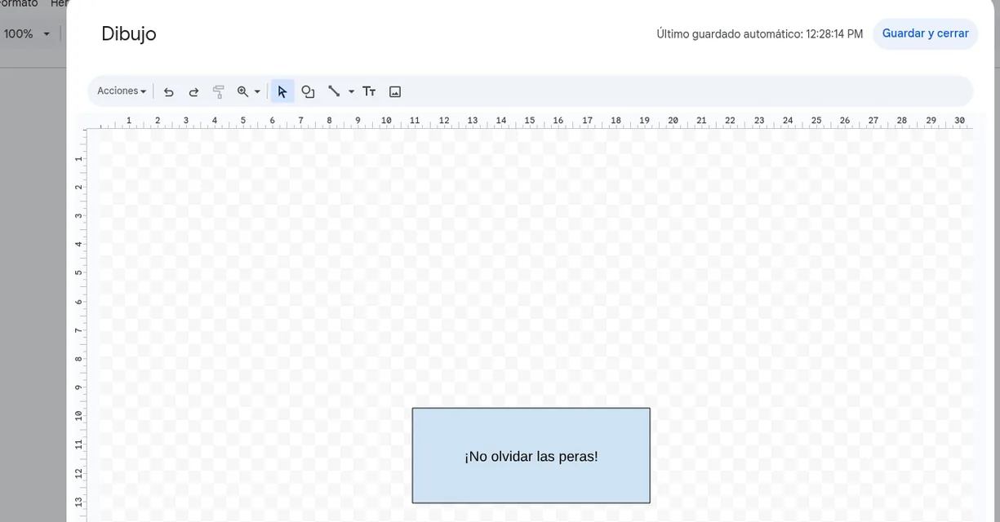
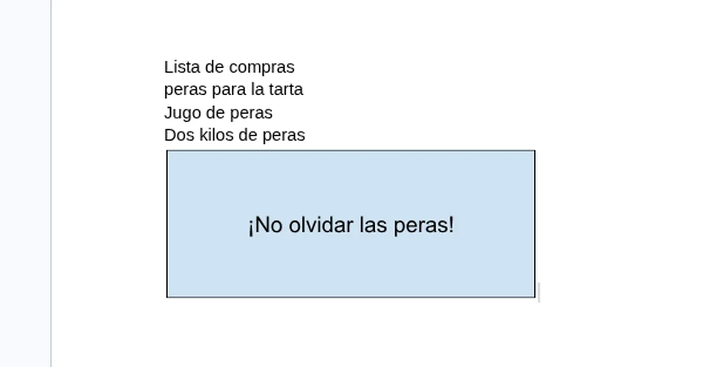
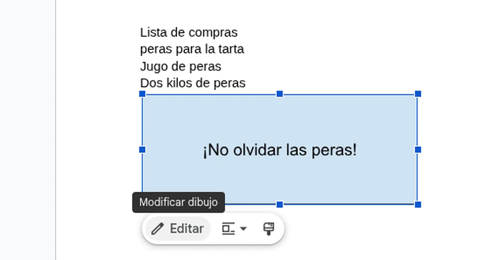
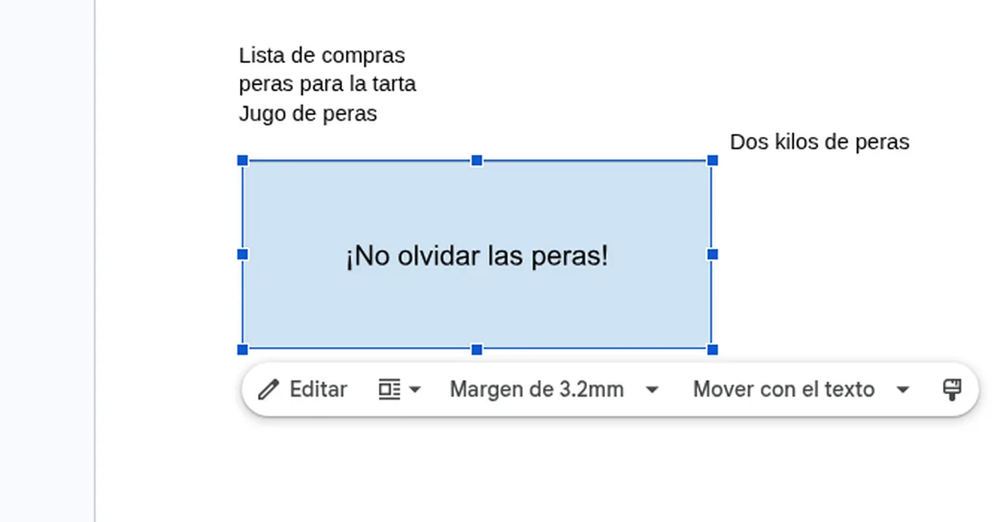
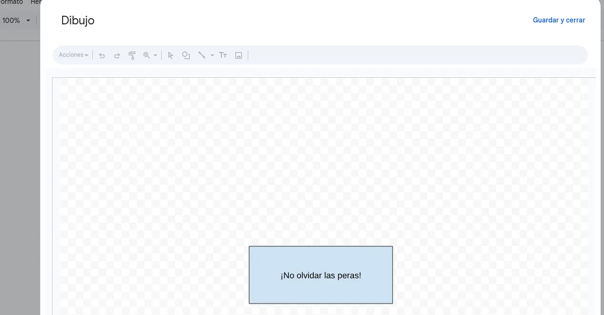

Curso de Google Documentos › Insertar › Lección 23
Lección 23 de 53 · menú Insertar
Cómo hacer un dibujo en Google Docs: formas y texto
Fecha del video: · Programado
¿Querés hacer un dibujo en Google Docs? Con Insertar → Dibujo → Nuevo se abre el editor de dibujo: ahí armás formas, líneas y cuadros de texto, y con Guardar y cerrar el dibujo queda dentro del documento. Acá lo vemos paso a paso.
En el ejemplo usamos el documento «Lista de compras» y dibujamos un rectángulo con el texto «¡No olvidar las peras!». Al final lo borramos, así el documento quedó como estaba. Ojo con los nombres: la ayuda de Google dice «Desde Drive», «Intercalar» y «Separar texto»; en la pantalla dice De Drive, Entre líneas y Dividir texto.
Paso 1: Insertar → Dibujo → Nuevo
Arriba, en la barra de menús, tocá Insertar y después Dibujo. Se despliega un submenú con dos opciones: Nuevo, para crear un dibujo desde cero, y De Drive, para insertar un dibujo que ya tenés guardado en Drive (queda vinculado al original). Elegí Nuevo.

Paso 2: conocé el editor de dibujo
Se abre una ventana llamada Dibujo encima del documento, con un lienzo cuadriculado. En la barra de arriba tenés el menú Acciones, deshacer y rehacer, el zoom, Seleccionar, Forma, Línea (con una flechita para elegir Línea, Flecha, Curva, Polilínea, conectores o A mano alzada), Cuadro de texto e Imagen.

Paso 3: elegí una forma
Tocá Forma → Formas y elegí el rectángulo. En ese mismo menú también hay Flechas, Llamadas (los globitos de diálogo) y Ecuación.

Paso 4: dibujala en el lienzo
Hacé clic en el lienzo y arrastrá: aparece la forma. Con la forma seleccionada, arriba le cambiás el Color de relleno, el Color del borde, el Grosor del borde y la Línea del borde.

Paso 5: escribí adentro y tocá «Guardar y cerrar»
Hacé doble clic dentro de la forma y escribí tu texto. Cuando esté listo, tocá el botón azul Guardar y cerrar, arriba a la derecha.

Paso 6: el dibujo queda en el documento
El editor se cierra y el dibujo aparece insertado en el documento, donde estaba el cursor.

Paso 7: «Editar» y las opciones de ajuste de texto
Tocá el dibujo: debajo aparece una barra con el botón Editar (su ayuda dice «Modificar dibujo») y, al lado, las Opciones de ajuste de texto: Entre líneas (la opción por defecto), Ajustar texto, Dividir texto, Detrás del texto y Delante del texto.

Con Ajustar texto el texto del documento se acomoda al costado del dibujo, y en la barra aparecen el margen (en el ejemplo, «Margen de 3.2mm») y «Mover con el texto».

Paso 8: volvé a editarlo
Para cambiar el dibujo, tocá Editar o hacé doble clic sobre él: se vuelve a abrir el editor con todo lo que tenía. Cambiás lo que quieras y otra vez Guardar y cerrar.

Al final borramos el dibujo y el documento quedó como al principio.

Fuentes oficiales: Aprende a usar dibujos y marcas y Cómo insertar o borrar imágenes y videos (opciones de ajuste de texto). Mirá también el menú Insertar completo (video: Google Docs: menú Insertar paso a paso) y la lección anterior, Enlaces y marcadores.
Mirá el Short
Estreno del Short: 03/12/2026 · 09:00 (hora Argentina)
Video relacionado: Google Docs: menú Insertar paso a paso (tutorial completo) — el video largo del menú Insertar (verlo en YouTube).
Fuente oficial: Ayuda de Editores de Documentos de Google. Capturas propias en un documento de ejemplo («Lista de compras»). El video usa voz generada con IA.